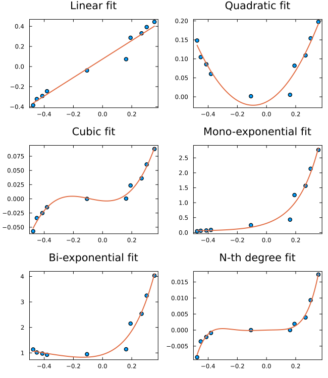

EasyFit.jl
Easy interface for obtaining fits of 2D data.
The purpose of this package is to provide a very simple interface to obtain some of the most common fits of 2D data. Fitting functions are available for linear, quadratic, cubic, n-th degree polynomial, exponential, normalized exponential-decay, and spline fits, plus utilities for moving averages and density (continuous histogram) estimation.
Under the hood this package uses LsqFit and Interpolations, which are already quite easy to use on their own. EasyFit adds a simple globalization heuristic on top of LsqFit, so that good non-linear fits are obtained more consistently, without the user having to think about initial guesses.
Our aim is to provide a package for quick fits without having to think about the code.
Installation
julia> ] add EasyFit
julia> using EasyFitContents
Read the Linear fit section first, because all the others are similar, with a few specificities:
- Linear fit
- Quadratic fit
- Cubic fit
- N-th degree polynomial fit
- Exponential fits
- Normalized exponential decay
- Splines
- Moving averages
- Density function
- Bounds and fixed parameters
- Options
Overview
Every fitting function returns a data structure with the fitted parameters, the correlation coefficient (R2), and vectors (x, y) that can be used to directly plot a smooth curve through the fit, alongside ypred and residues evaluated at the original data points. This gallery, produced with Plots.jl, shows the typical use pattern — scatter the data, then plot! the fit on top of it — for several of the fits described in this documentation:
using EasyFit, Plots, Random
Random.seed!(1)
x = sort(rand(10)) .- 0.5
plot(layout=(3, 2), framestyle=:box, grid=false, size=(650, 750))
y = sort(rand(10)) .- 0.5
scatter!(x, y, label="", subplot=1, title="Linear fit")
fit = fitlinear(x, y)
plot!(fit.x, fit.y, label="", linewidth=2, subplot=1)
y2 = y .^ 2
scatter!(x, y2, label="", subplot=2, title="Quadratic fit")
fit = fitquad(x, y2)
plot!(fit.x, fit.y, label="", linewidth=2, subplot=2)
y3 = y .^ 3
scatter!(x, y3, label="", subplot=3, title="Cubic fit")
fit = fitcubic(x, y3)
plot!(fit.x, fit.y, label="", linewidth=2, subplot=3)
y4 = 0.3 * exp.(5y)
scatter!(x, y4, label="", subplot=4, title="Mono-exponential fit")
fit = fitexp(x, y4)
plot!(fit.x, fit.y, label="", linewidth=2, subplot=4)
y5 = 0.3 * exp.(5y) .+ 0.7 * exp.(3y2)
scatter!(x, y5, label="", subplot=5, title="Bi-exponential fit")
fit = fitexp(x, y5, n=2)
plot!(fit.x, fit.y, label="", linewidth=2, subplot=5)
y6 = y .^ 5
scatter!(x, y6, label="", subplot=6, title="N-th degree fit")
fit = fitndgr(x, y6, 5)
plot!(fit.x, fit.y, label="", linewidth=2, subplot=6)
plot!()